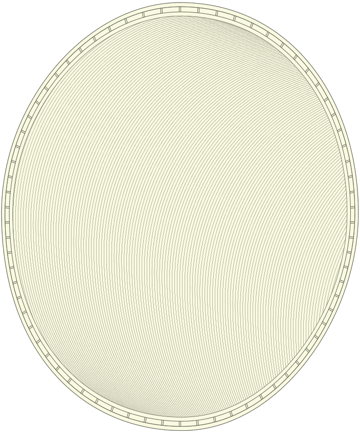
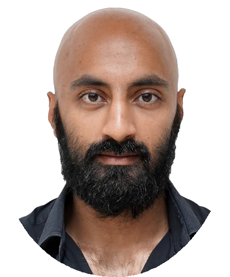
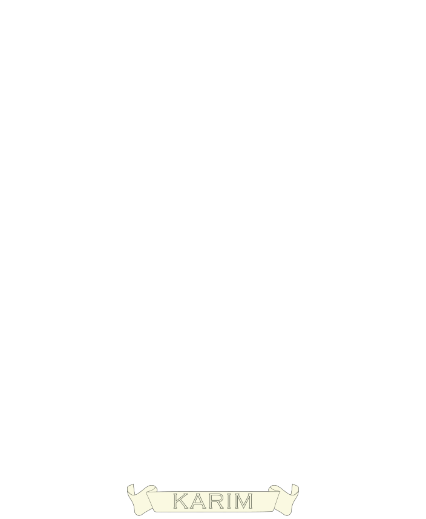

About
who built this, and why


Special message from the developer
Thank you for downloading VisualNeuroscience. My name is Fadil Karim. I built this app in full with the help of Claude and Kimi AI. I hope you find it useful.
What is VisualNeuroscience
An interactive brain atlas that runs in the browser: the MNI152 template with the AAL-116 atlas, Brodmann areas searchable by function, whole-brain HCP1065 tractography, receptor-density maps, brain-network states, published studies drawn on the scan itself, and a microanatomy page that goes down to the single cell. Nothing installs and nothing needs an account. Every scan, atlas and tractogram ships with the page and is rendered on your own machine, so it works offline, and it works on a phone at the back of a lecture theatre.
Two newer sections will keep growing. A digital textbook, three chapters so far, with every claim cited and linked to the paper and the gaps flagged rather than papered over. And a practice mode that scores as it goes, leans toward what you keep getting wrong, and explains every answer; the first question bank follows the KCL MSc Neuroscience syllabus, and banks for other courses are next. The first study on the shelf is a paper on hallucinations in schizophrenia: ten regions of the auditory, language and control systems, switched between ordinary hearing and the hallucinating state.
The same app is wrapped for iPhone, iPad, Mac and Apple Vision Pro, where the atlas becomes a set of windows you can arrange around the room.
The short version
I am an engineer by background. I finished a PGCert in Applied Neuroscience at King’s College London and could not carry it on to the full master’s — full-time work and the cost got in the way, as they do for a great many people who would like to study the brain and have no lab to walk into. So I kept learning the way an engineer learns, by building. The thing I had most wanted while studying was a good map of the brain that I could open on anything, without a licence, an installer or a login. It did not exist at a price I could pay, so I made it, and I made it free.
A good map of the brain should not sit behind a paywall. That is the whole idea, and everything else here follows from it.
Who it is for
Anyone learning neuroanatomy without a lab or a licence. Students revising on a phone between lectures. Lecturers who want something live on the screen rather than a slide of a brain. Clinicians who need a region and its function checked in a moment. Researchers who would like their own findings drawn on a brain that other people can turn. And anyone who was priced out of studying this, as I was.
How it is built
It is built to be read as well as used. Each page says where its data came from and where the evidence stops, and each study page says which of its regions are drawn exactly and which only approximately. The atlases are the open ones the field already trusts: the MNI152 template, the AAL parcellation, the MRIcron Brodmann atlas and the HCP1065 tractogram. The rendering is NiiVue, running in your browser’s own graphics. What the site collects, which is very little, is set out on the privacy page.
Where it stands
I believe it is the most advanced and most usable brain atlas on the App Store, and I say that having looked. The deep atlases live in research infrastructure like the EU’s EBRAINS, built for laboratories and priced in expertise. Nothing there, and nothing on the store, puts this much of the brain in your pocket, readable without training, on a train, offline, for nothing. That is the gap this app exists to close, and on the measure that matters to a learner — what you can actually reach and use — I would put it ahead of any of them.
Built with AI
This app is also an experiment in how one person can build. I directed Anthropic’s Claude models as the implementation engine — Opus 4.8 at the start, then Opus 5, then Fable 5 and Fable 5.1 as each arrived — across roughly twenty thousand lines of shipped code. The division of labour was strict: I owned what to build, which data to trust, and whether the result met the bar; the AI wrote most of the code; nothing shipped without being verified headlessly against the running product, and no scientific claim without its published source. The “.AI” in the name is how the app was made before it is anything the app does.
You can also ask the atlas questions from an AI assistant: the same data behind these pages is served to Claude, ChatGPT, Kimi and anything else that speaks the Model Context Protocol, with answers that link straight into the view they describe.
From the maker
Tell me what is missing
A one-person project has a short feedback loop, and I would like to use it. If a feature would make this work for your module, your research group or your society — a question bank built to your syllabus, a missing atlas, a dataset overlay, one of your own published studies visualised on the scan — write and say so, and it usually ships within the week. Corrections are the most welcome mail of all: the pages make factual claims and cite their sources, and if one of them is wrong I would rather know.
Write to fkarim@visualneuroscience.ai and I read it myself.
Fadil Karim
VisualNeuroscience.AI · built by Fadil Karim · OttomanLabs